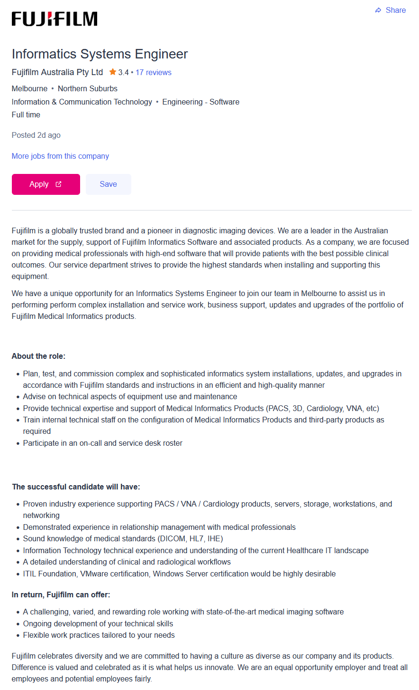
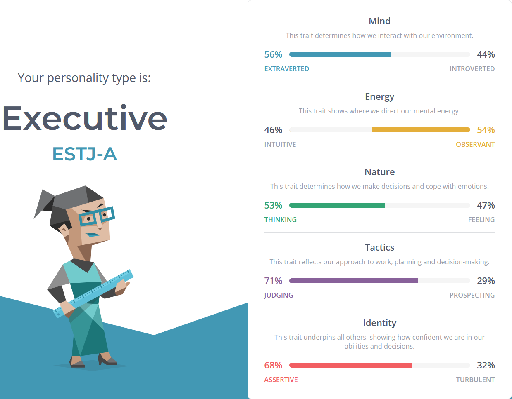
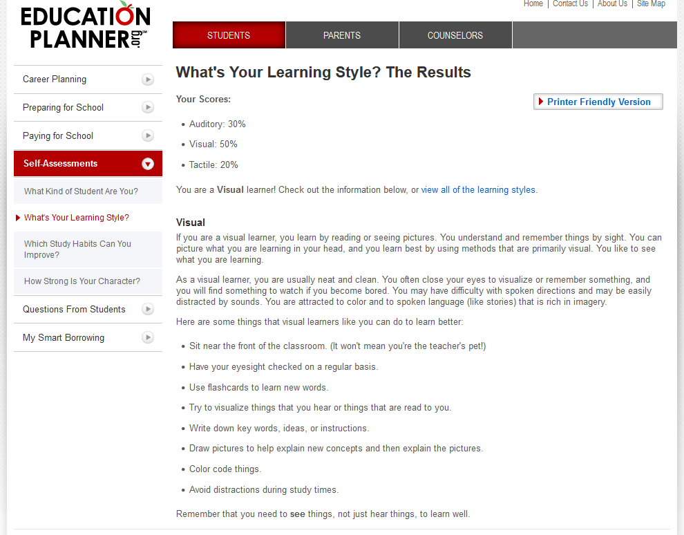
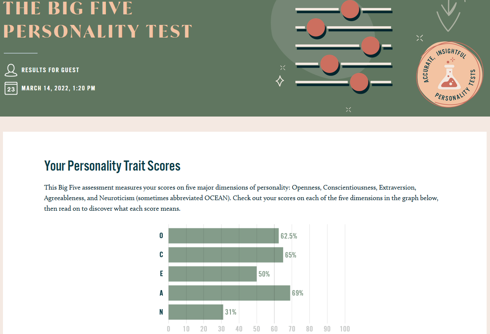

Personal Information
- Full Name: Chalani Malindra Paranavithanage
- Student Number: s3953977
- Student Email: s3953977@student.rmit.edu.au
- Nationality: Sri Lankan
- Education to date:
- Undergraduate student at RMIT University – Bachelor of Information Technology
- Scientific High School Diploma – Biology stream
- Certification of Italian as a Foreign Language – University for Foreigners of Siena(Italy)
- European Computer Driving License - Association for Computer Science and Automatic Calculation (AICA)
- Languages spoken: English, Italian, Sinhala and Spanish
Fun Fact:
A fun fact about myself is that I started to learn and speak four different languages since I was 13 years old and pursued my education in 3 different countries across Asia, Europe and Oceania.
Interest in IT
- In today’s world everything depends on Information Technology from food processing, medical systems, manufacturing, defence systems, automobile to space centres. Therefore, Information technology is a field with lots of curiosity and potential. Due to its high demand, I became interested in finding my ways through in the ocean of Information Technology industry. As a matter of fact, I started to get interested in and learn more about Information Technology since I started to study it as a school subject at the secondary school. Furthermore, my uncle who is an IT Engineer has always sparked my interest in Information Technology since my childhood. My experience in IT is limited with basic and intermediate computer skills which I obtained through ECDL (European ComputerDriver's License) by Association for Computer Science and Automatic Calculation (AICA Italy).
- Since I was interested in IT, I wanted to take my higher education in Information Technology. I did a little bit of research to find a suitable University for me. Then, I found RMIT University as a reputed and modern Australian University which has lot of opportunities for students to grow and improve their hard skills and soft skills with hands on experience. As a consequence, I chose RMIT University to further enrich my knowledge in Information Technology and computing to obtain better job opportunities in the future.
- With my higher studies at RMIT University, I am looking forward to gaining more knowledge and experience in IT Industry. Most importantly to grasp new technological ideas and skills required in Network and Systems Engineering to help the society to enrich the mankind. Also, I expect to collaborate and actively participate in group projects with other students to acquire more exposure to industry based projects.
Ideal Job
Job Advertisement
Figure 1: Job Description - seek.com.au
URL: https://www.seek.com.au/job/56243600?type=standout#sol=a38b3650d7e197ee52f5955086e303df22a588ea
(seek.com.au)
Position Description
- The advertised position is for an Informatics Systems Engineer at Fujifilm Australia Pty Ltd. This role requires planning, commissioning and testing complex informatics systems installations and upgrades according to organisational standards and also provide technical support for Medical Informatic products. Furthermore, this position involves on call and service desk related duties as well as training internal technical staff on configuring medical equipments.
- This role appeals to me because of its varied and challenging environment as well as the opportunity to get hands on with Medical Informatics Products to gain more experience and exposure in that industry. In fact, it is a very good blend of Information Technology and Biomedical industry. Moreover, the company location and the possibility to be employed as a full time employee are important benefits for career progression as well.
Required Skills, Qualifications and Experience
To succeed in this role, the below qualifications, skills and experience are required.
- Qualifications:
- Bachelor’s degree in information technology, Engineering or related field.
- Certification in VMware, Windows Server, ITIL Foundation.
- Skills:
- Understanding of current Healthcare IT Industry.
- Understanding of radiological and clinical workflows.
- Experience:
- Demonstrated experience in supporting cardiological products, storage, workstations, servers and IT networking.
- Outstanding experience in managing relationships with medical professionals.
My current Skills, Qualifications and Experience
- Qualifications:
- Certification in ECDL (European Computer Driving License).
- Scientific High School Diploma – Biology stream.
- Certification of Italian as a Foreign Language – University for Foreigners of Siena (Italy).
- Skills:
- Multilingual: English, Italian, Sinhala and Spanish.
- Proficient in IT equipment configuration.
- Experience:
- Proven experience in medical equipment logistics industry.
- Demonstrated experience in automobile industry.
Plan to obtain required Skills, Qualifications and Experience
I am looking forward to completing my bachelor’s degree in IT at RMIT University and few other related IT professional certifications to obtain the required qualifications for the advertised position. Moreover, I will get enhanced my previously acquired knowledge in biology at high school and healthcare sector by take part in industrial based workshops and traineeships.
Personal Profile
Myers-Briggs Type Indicator (MBTI) Test
Figure 2: Myers-Briggs Type Indicator (MBTI) Test Learning Styles Test
Figure 3: Learning Styles Test Big Five Personality Test
Figure 4: Big Five Personality Test What does above test results mean for me.
The above test results indicate that I am an “Extraverted”, which means I am a very open person and prefer spending time with other people to get to know them. I not only love being down-to-earth and more practical in life but also I like to have a clear picture of what I learn. Moreover, these tests shows that I formulate decisions based on logic and reason and that I always try to be organized and self-disciplined by stitching into a schedule instead of being spontaneous.
How these results may influence my behaviour in a team.
Since I am a creative, goal oriented and organized person, I would be a good choice for a team of varied team members. In fact, I will be more open listening to new ideas and methods and help fellow team members whenever they need a hand. Also, I will make sure that work is done in a timely manner and with highest standards.
How should I take these results into account when forming a team?
According to these results, I believe that my characteristics would suit to a team of people with varied skills and expertise in a wide scope. Also, team members who are open to listen to others and willing to come up with the optimum decisions to reach the team goals would be a great fit.
Project Idea
Overview
The “Weather+ Me” project is based on developing a mobile application suitable for users of all ages. This app is a smart solution for task scheduler which is integrated with weather monitoring function. Unlike, stand-alone task scheduler apps and stand-alone weather apps, the “Weather+ Me” is a smart app which can suggest appropriate timing for scheduling tasks based on weather conditions, reminding the users of any existing potential tasks that can be impacted by weather conditions as well as notifying users of the precautions based on daily weather forecasts. These features would benefit the users of this application to prevent or reduce the scheduled task cancellations as well as to stay protected from the unpredictable weather conditions.
Motivation
In today’s world, people have been using generic task schedulers to plan their day to day tasks such as “Google Calendar”, “Microsoft ToDo”, etc. With these stand-alone task schedulers, users may have to cancel their tasks if they are impacted by unexpected weather conditions such as raining, heavy winds, humidity level, UV level, etc. In these situations, it would be handy to have a weather forecast information integrated scheduler app which could notify the user about the potential weather conditions that can impact on their schedules. As a result, the idea to develop the innovative app “Weather+ Me” has emerged.
Description
In order to address the prevailing issues encountered in existing scheduler apps as well as to improve its functionality, 3 core features are introduced in “Weather+ Me” app as described below.
Weather based time suggestions for task creation
In order to create a new task, the user will enter a task name, task type, date and time. Then, based on the task type the app will check the weather related to the entered date and time and see whether the task is feasible to be carried out.
If the task is not impacted by the forecasted weather then the task will get created. In case, if the task could potentially be impacted by the forecasted weather, then the app will suggest feasible times for the above mentioned task and prompt the user to change the schedule date and/or time as appropriate.Check existing schedules for potential weather impact
This feature can be considered as another key feature included in the “Weather+ Me” app. As a matter of fact, the app will routinely check for existing scheduled tasks and for their nature 24 hrs prior to its schedule time. Then, in case of a potentially impacting weather conditions, it will notify the user to reschedule their task. If the user chooses to continue with the scheduled task disregarding the impacting weather conditions, the user can ignore the alert. Meanwhile, if the user chooses to reschedule the task, the app will guide the user to enter a new date and/or time in two different ways. The first way is to manually a enter date and/or time. The second way is, that the app will evaluates the weather forecast and it suggests feasible schedules for the user to pick as appropriate to their requirements.
For instance, a user might have added a schedule to play Tennis over the weekend. 24 hours prior to the event time, the app will evaluate the weather forecast and will notify the user about possible rainy weather. Then user can choose either to ignore the alert or reschedule the event. If the user chose to reschedule the event, he/she can either manually set a new date and/or time or pick a feasible date and/or time as recommended by the app.Weather based precautions and personal care suggestions
The “Weather+ Me” app, daily analyses the weather forecast and notify the user with useful recommendations and suggestions on precautions and personal care tips to follow based on the weather conditions predicted for that day. This feature is integrated into “Weather+ Me” app taking the user’s well-being into account to provide them a better experience.
For instance, on a rainy day, the app will remind the user to carry an umbrella with them. If it is a rainy day with heavy winds, it will suggest the user to carry a raincoat over an umbrella. On the other hand, if it is a sunny day with quiet high temperatures, the app will suggest the user to drink more water and stay hydrated, apply a sunscreen, stay indoors and to always carry a pair of sunglasses with them.Tools and Technologies
Tools and technologies required to implement the “Weather+ Me” app are as follows:
IDE:
An IDE (Integrated Development Environment) is a software for building applications. It is usually integrated with a code editor, a compiler and a debugger. An IDE is able to support different programming languages such as Java, JavaScript, Dart, etc. Most popular IDEs used for mobile app development are: Eclipse IDE, Visual Studio Code, Android studio, etc.
SDK:
A Software Development Kit also known as SDK, is a set of software development tools with the ability to develop applications for specific platforms using compiler, code libraries and debuggers. For instance, well-known mobile app SDKs are Flutter, React Native, Xamarin etc. In fact, Flutter and React Native are popular open-source software’s that can be used to develop cross platform mobile applications for Android and iOS.
Skills Required
Developing a mobile app requires wide variety of skills. Therefore, it is important to have sound knowledge in different programming languages, UI (User Interface) designing skills, mobile app testing knowledge, cross-platform development skills, computer proficiency, Internet of things (IoT) skills and some project management skills as well. Nowadays, these skills can be consolidated by self-studying, by taking online courses from widely available online learning platforms or last but not the least, enrolling into a Bachelor’s degree in IT or similar. Finally, it is always important to keep in mind to create user-friendly apps where the user can get their tasks done and reach their goals in an effective and efficient manner.
Outcome
In case of a possible success in developing the project “ Weather+ Me” app, it would be widely used by users of all ages who are in need of a smart task scheduler application integrated with weather forecast. Additionally, the app users will be benefitted to have a smooth lifestyle by having an app which could also provide personal care tips and precautions to take in case of potentially impacting weather conditions. In fact, this app would solve the original issue of having to cancel many important scheduled tasks/ activities in the last minute due to unpredictable weather. As a result, “Weather+ Me” app not only will have a positive impact on its users but also it will help them to have a productive schedule without last minute unexpected cancellations.